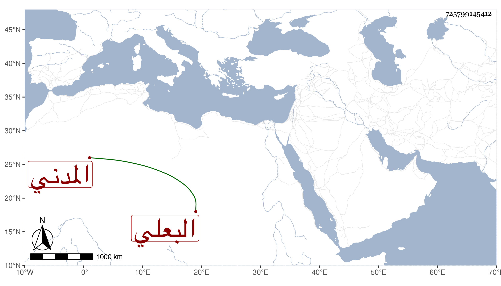

0902Sakhawi.DawLamic.ITO20230111-ara1.EIS1600.725799145412
Biography ID: 725799145412
أحمد بن أحمد بن عليك البعلي ثم المدني أخو إبراهيم بن أحمد بن غنائم الماضي . ولد في أواخر سنة أربع وخمسين وسبعمائة وسمع على ابن صديق وأجاز في استدعاء فيه شيخنا سنة إحدى وعشرين ، وسيأتي أحمد بن أحمد بن علبك ولكن ذاك مع كونه بالغين المعجمة المضمومة اسم جده وهذا مع كونه بالمهملة المفتوحة لقب واسم جده غنائم .
